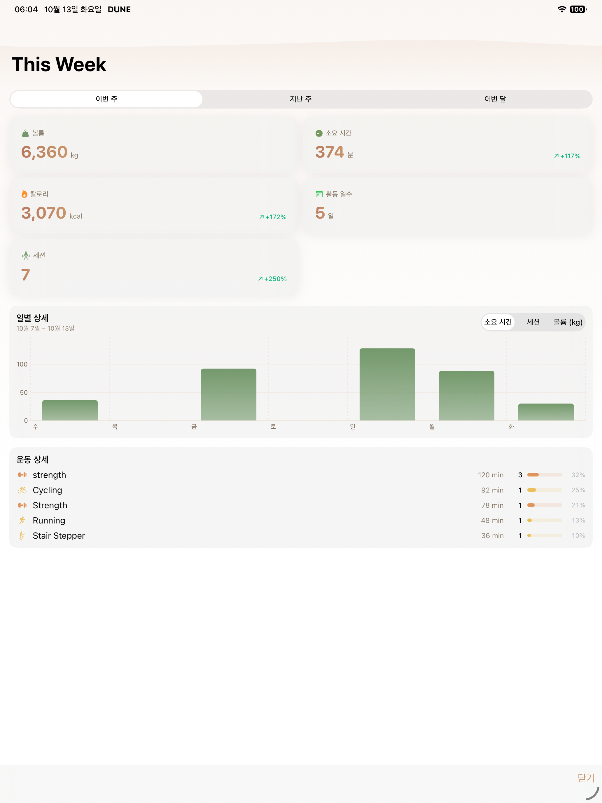
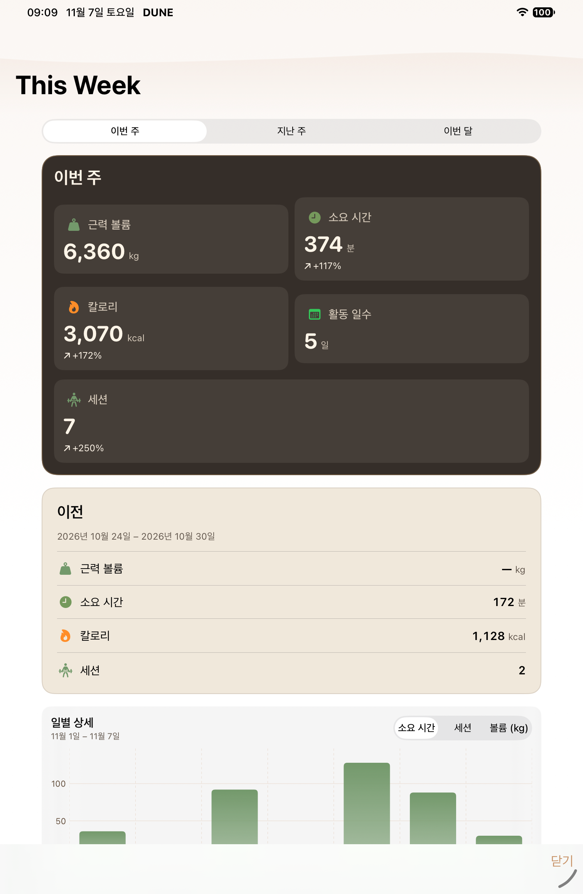
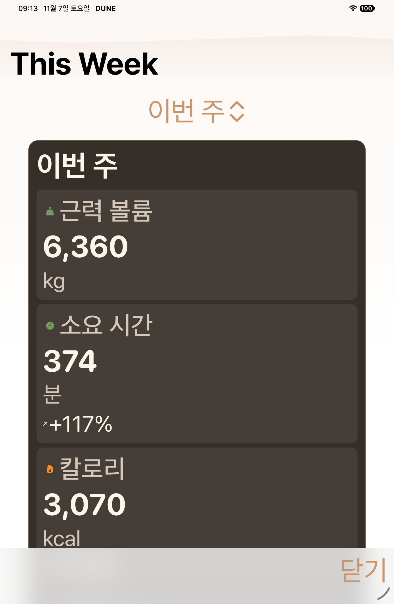

S07 · B16+B17
New captures require completed passed selectors. Historical actual-map files remain before context. W33 B12 source-byte proposal is historical context, never a new W33 capture.
- regular historical baseline absent
- duo historical baseline absent
- duo-open historical baseline absent
- Historical dirty-source captures cannot count as new B17 native proof.
- MAX period capture intentionally shows the closed Picker control before tap; the same-view PNG is expected. Passed selector checks subsequent option selection and range changes.
- Duo current-source capture pending; no hinge angle or four-profile pass inferred.

ipad · historical
S07 actual-map older-source context

ipad · after
S07 iPad separate window normal loaded statistics and close
AX ipad · after
ipad · after
S07 iPad separate window MAX loaded statistics and close
AX
ipad · after
S07 MAX period menu fully visible
AXprovenance manifest